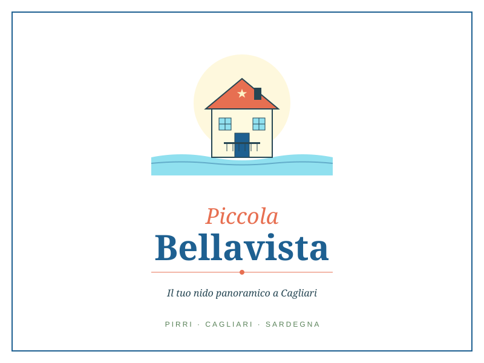

Check-in semplice
Indicazioni chiare prima dell'arrivo e accesso comodo per organizzare il viaggio senza stress.

Casa vacanza a Pirri, Cagliari
Monovano luminoso a Pirri con vista aperta verso il mare e il Poetto.
Una base semplice e comoda per Cagliari, ospedali, aeroporto e spiagge.
La casa
Piccola Bellavista è uno studio accogliente in Via Bellavista 14, Pirri. È una soluzione pratica per chi vuole visitare Cagliari, muoversi verso il mare o lavorare qualche giorno con tranquillità.
Gli ospiti trovano ambienti ordinati, istruzioni chiare e comunicazione rapida prima, durante e dopo il soggiorno.
Servizi
Indicazioni chiare prima dell'arrivo e accesso comodo per organizzare il viaggio senza stress.
Pirri permette di raggiungere aeroporto, centro di Cagliari e spiagge principali con spostamenti brevi.
Messaggi automatici e assistenza diretta aiutano l'ospite a sentirsi seguito in ogni fase.
Spiagge entro 40 km
Da Pirri puoi scegliere ogni giorno un mare diverso: spiagge cittadine, piccole baie e tratti panoramici verso il Sud Sardegna.
La spiaggia lunga di Cagliari, ideale per una giornata facile tra mare, passeggiata e locali sul lungomare.
Apri indicazioni su Google MapsUna baia riparata sotto la Sella del Diavolo, comoda quando vuoi un mare raccolto vicino alla città.
Apri indicazioni su Google MapsUna cala scenografica e più selvaggia, amata per le rocce chiare e l'acqua intensa.
Apri indicazioni su Google MapsUn tratto arioso del litorale verso Quartu, con sabbia chiara, fondali bassi e vista aperta sul Golfo.
Apri indicazioni su Google MapsCosta ampia e rilassata, perfetta per uscire dalla città restando comunque vicino a Cagliari.
Apri indicazioni su Google MapsUna zona costiera comoda e panoramica lungo la strada verso Villasimius.
Apri indicazioni su Google MapsUna cala piccola e suggestiva sulla litoranea, tra roccia, macchia mediterranea e mare intenso.
Apri indicazioni su Google MapsUn tratto celebre per acqua trasparente e ciottoli chiari: una meta breve, ma molto scenografica.
Apri indicazioni su Google MapsSpiaggia, area archeologica e atmosfera da gita completa quando vuoi unire mare e storia.
Apri indicazioni su Google MapsCosa vedere a Cagliari
Cagliari si scopre bene a piccoli itinerari: un mercato al mattino, Castello nel pomeriggio, il mare quando la luce cambia.
Una terrazza monumentale sul cuore della città, perfetta per iniziare da un panorama ampio.
Apri su Google MapsIl quartiere alto e antico, tra vicoli, palazzi storici, belvedere e scorci sul porto.
Apri su Google MapsNel cuore di Castello, un luogo elegante dove leggere secoli di storia cittadina.
Apri su Google MapsUna torre medievale simbolo della città, ideale per entrare nell'atmosfera del centro storico.
Apri su Google MapsUno dei mercati più vivi della città, da visitare per colori, profumi e prodotti locali.
Apri su Google MapsUn'oasi naturale tra saline, percorsi lenti e fenicotteri, bellissima anche al tramonto.
Apri su Google MapsIl promontorio iconico del Golfo, con sentieri panoramici e vista memorabile sul Poetto.
Apri su Google MapsLa grande spiaggia cittadina: mare, passeggiate, colazioni vista acqua e serate estive.
Apri su Google MapsUn quartiere centrale e conviviale, tra ristoranti, vicoli, botteghe e porto vicino.
Apri su Google MapsUn quartiere quieto e colorato, con case basse, piante alle porte e ritmo piacevole.
Apri su Google MapsDisponibilita
Le richieste vengono salvate come "richiesta" e saranno confermate dall'host dopo controllo finale.
Per sapere se le tue date sono libere, scrivici su WhatsApp: ti rispondiamo in giornata.
Chiedi disponibilità su WhatsAppFAQ
Le istruzioni vengono inviate prima dell'arrivo. L'obiettivo è rendere il check-in semplice e senza stress.
La casa si trova a Pirri, in posizione comoda per raggiungere l'aeroporto di Cagliari in circa 15 minuti, traffico permettendo.
Sì, il Poetto è raggiungibile in auto in circa 15 minuti. La posizione è utile anche per visitare Cagliari.
Puoi inviare una richiesta dal calendario disponibilità oppure scrivere via WhatsApp o email.
Posizione
Una base comoda per chi arriva in aereo, vuole scoprire Cagliari o cerca un appoggio tranquillo per muoversi nel sud Sardegna.
Apri su Google MapsCheck-in
Prima del soggiorno vengono inviate indicazioni pratiche per raggiungere la casa, entrare con calma e sapere a chi scrivere in caso di necessità.
Regole
Lascia gli spazi ordinati e segnala subito eventuali problemi, così possiamo intervenire rapidamente.
Evita rumori nelle ore serali e notturne, nel rispetto del vicinato e degli altri ospiti.
Per dubbi su arrivo, parcheggio o servizi, scrivi prima possibile: una risposta rapida evita stress.
Prenotazioni
Puoi inviare una richiesta dal modulo disponibilità, scriverci su WhatsApp o mandare una email.